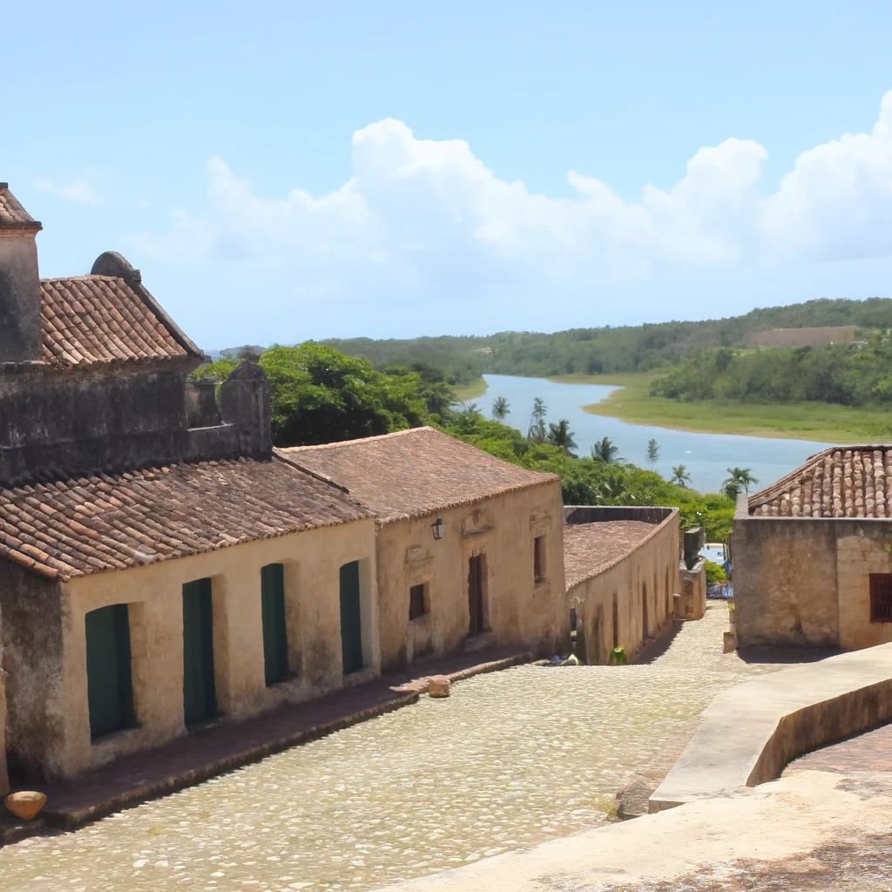
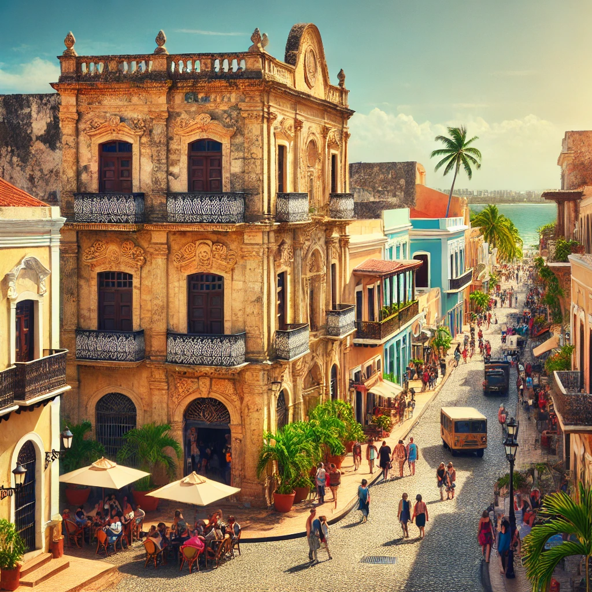
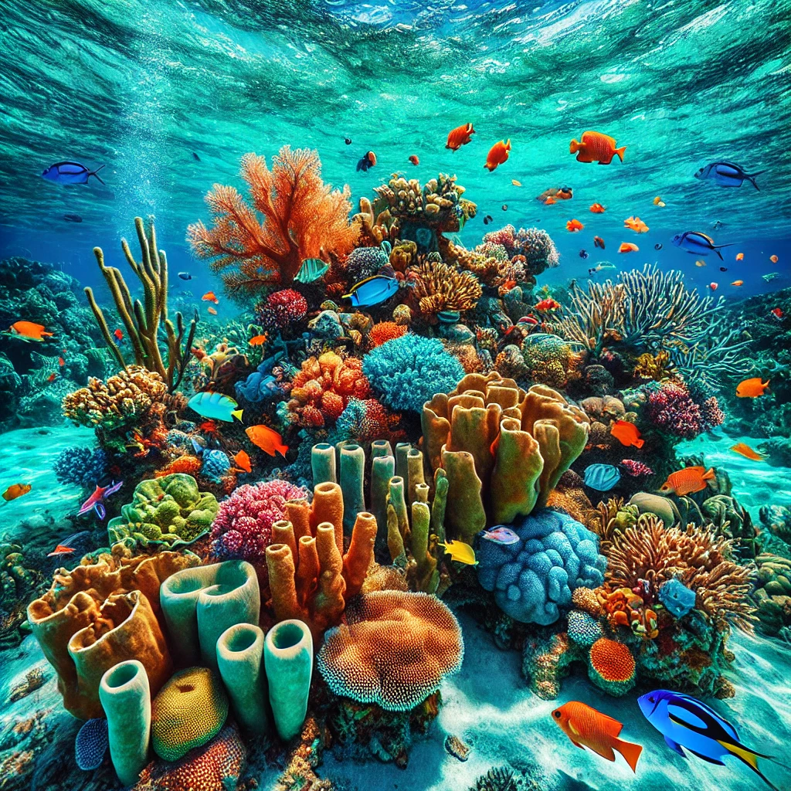
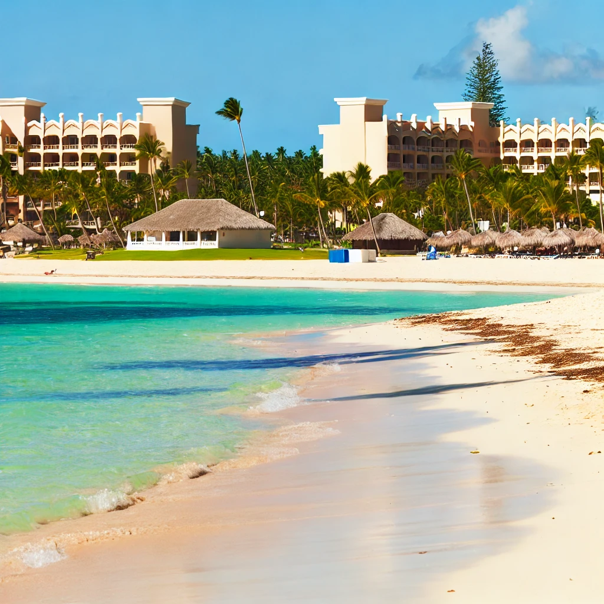

Top Attractions in the Dominican Republic
The Dominican Republic is a treasure trove of natural beauty and exciting activities. Here are top must-dos.
- Punta Cana Beaches: Relax on pristine beaches and enjoy crystal-clear waters at this popular tourist spot.
- Altos de Chavón: Explore this replica of a 16th-century Mediterranean village perched above the Chavón River.
- Santo Domingo Colonial Zone: Discover the rich history of the nation's capital with colonial-era architecture and cultural landmarks.
- Divers Paradise at Bayahibe: Experience world-class diving and snorkeling in vibrant coral reefs.
Dining in the Dominican Republic
Indulge in Dominican cuisine, from fresh seafood to hearty stews. Here are some delicious spots to try.
- La Ysabela: Savor traditional Dominican dishes like sancocho and mangu in a rustic, beachfront setting.
- Boca Chica Beach Restaurants: Relish seafood dishes at local beachfront restaurants with stunning views.
- El Conuco: A cultural dining experience with live music and authentic Dominican food.
- La Parrillada de Don Juan: Enjoy a variety of grilled meats and local specialties in a family-friendly atmosphere.
Travel Tips for Dominican Republic Visitors
Maximize your experience with these insider tips for exploring the Dominican Republic.
- Best Time to Visit: Visit during the dry season (December to April) for pleasant weather and fewer crowds.
- Currency: The Dominican Peso (DOP) is the official currency, though U.S. dollars are widely accepted.
- Stay Safe: Stick to well-populated tourist areas and avoid venturing out late at night in unfamiliar neighborhoods.
- Transportation: Hire local taxis or use rideshare services for easier travel within cities.
Where to Stay in the Dominican Republic
The Dominican Republic offers diverse accommodations ranging from luxury resorts to charming boutique hotels.
- Punta Cana Resort & Club: A luxury resort offering all-inclusive packages, golf, and upscale dining.
- Casa de Campo Resort: Known for its gorgeous golf course, luxury villas, and exclusive beaches.
- Hard Rock Hotel & Casino: An all-inclusive resort with a lively atmosphere, entertainment, and a world-class casino.
- Hotel Nacional: A historic hotel in Santo Domingo with beautiful gardens and a range of amenities.